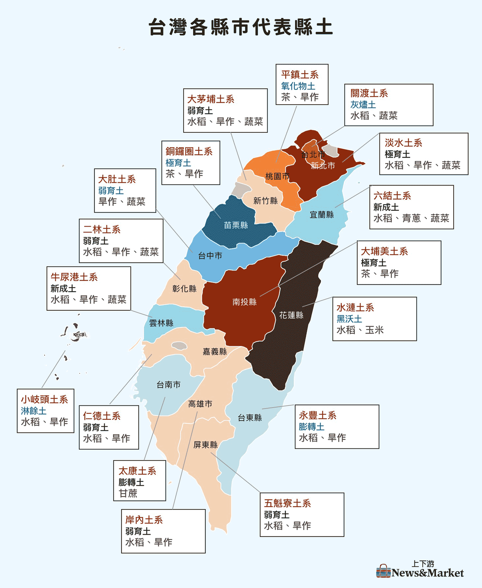
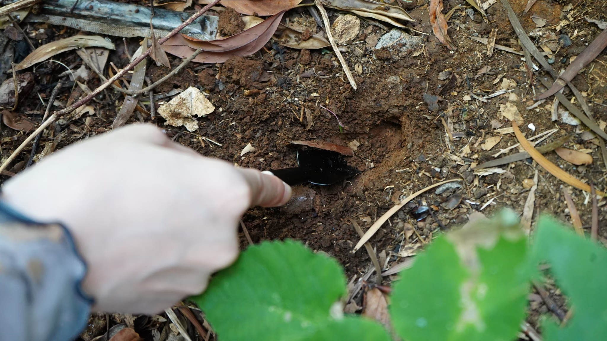
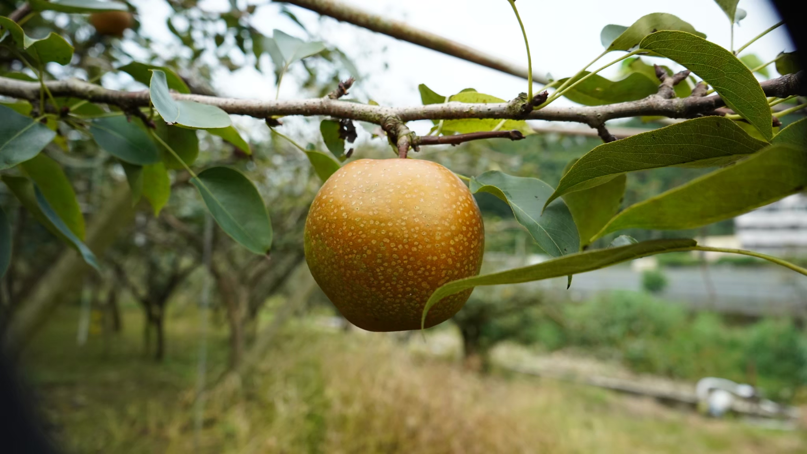
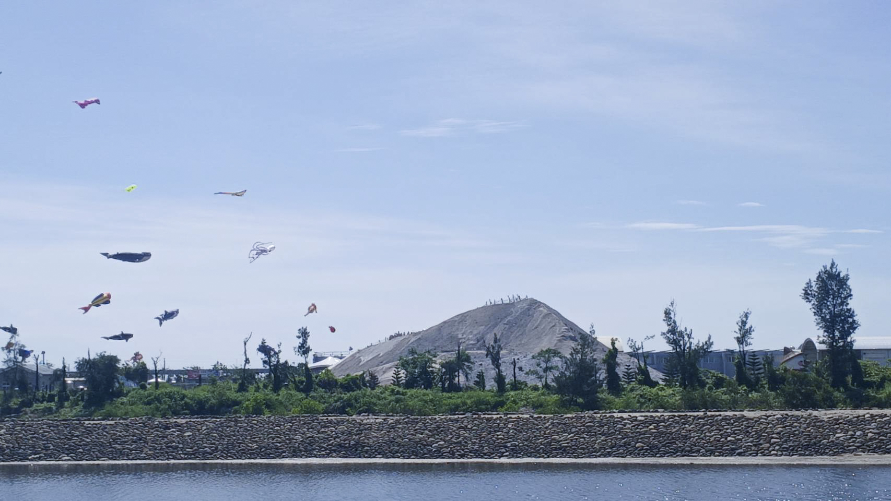
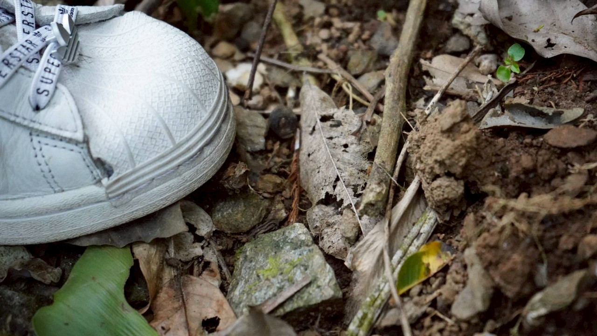

地層下的沈默敘事
世界 12 種土綱中，台灣奇蹟般擁有了 11 種。這座島嶼在極小面積內，濃縮了全球地質的萬年演化。
我們透過「香氣」轉化沈默的地層，讓冷硬的地質數據成為可以被嗅聞、被觸摸的島嶼記憶。


台北｜在硫磺霧氣中，守護那抹消失的橘色血脈
在北投，草山柑不僅是一顆水果，更是這片土地流動的血脈。主理人心絨姐自述「流著北投血脈」，自小在草山腳下長大，她記憶中最深刻的味道，就是那抹帶有火山礦物氣息的酸甜。
「草山柑是桶柑的始祖，但復育的路比想像中孤獨。」心絨姐說道。為了不讓這份在地信物消失，她與食雲集的夥伴發起復育運動，找來植物診療師、保價全收，讓近 25 位老農重新燃起鬥志。在溫泉鄉的硫磺霧氣中，她們復植了 300 株苗木，堅持將地產地銷的永續化為口中的康普茶與果醬。

台中｜東勢山坡間的甘露梨執著
在台中東勢的山坡間，有一座用心經營的甘露梨果園。這裡的梨子，口感與甜度全由氣候與農人的細心決定。乾旱時，果實糖度升高卻顯得粗硬；雨水過多時，雖然汁水飽滿卻少了香甜。農家面對這些自然挑戰，只能憑經驗調整採收時機，讓每一顆梨子都呈現最佳狀態。
果園以甘露梨為主要品種。農家採用套袋與減少農藥的方式，不僅確保果實安全，也維持口感。熟度的拿捏，是農夫最重要的功夫。這是一段屬於東勢的故事：土地與人共生，甜美梨子是最真誠的回報。

台南｜封存在時光裡的純白，鹽田遺址間的感官備忘錄
台南的鹽田，是一場關於時間與烈日的馬拉松。雖然台灣在民國 91 年因成本考量全面停止了日曬鹽，但這片土地上依舊留存著關於瓦盤鹽田的記憶。
「雖然曬鹽已經停了，但那份與老天爺博弈的智慧不能丟。」我們與曾見證鹽業興衰的長輩對話。過去，海水需在蒸發池曝曬兩到三週，沈澱出雜質，最終在結晶池中化為純白。這份來自土地的氣息，是我們在遺址間重新採集的、關於烈日與時間最誠實的味道。

台東｜在會呼吸的土地上，聽見縱谷林間的深呼吸
踏入東部縱谷，泥土會隨著季節乾濕膨脹、收縮，像是在緩慢地呼吸。在這裡，我們不談喧囂的訪談，而是跟隨大地的節奏沉靜下來。
走進森林與稻間，空氣中瀰漫著一股濕潤的重量感。這種被稱為「澎轉土」的黏土質地，雖然讓建築變得困難，卻賦予了作物極強的生命張力。晨間的霧氣鎖住了苔蘚的清香，森林裡的芬多精與稻禾生長的氣息交織在一起，形成一種深沉而溫暖的穩定感。